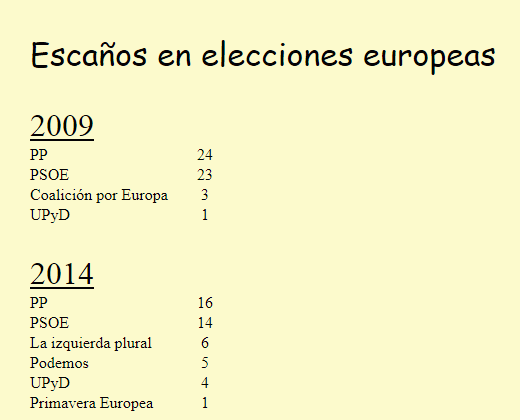

Resuelva los siguientes ejercicios guardando las respuestas en una carpeta cuyo nombre contenga su nombre y apellidos.
Escriba una hoja de estilo CSS para que el siguiente documento se vea en el navegador como muestra la imagen.
<?xml version="1.0" encoding="UTF-8"?>
<elecciones>
<eleccion tipo="europeas">
<año>2009</año>
<resultados>
<partido>
<nombre>PP</nombre>
<escaños>24</escaños>
<votos>42.12</votos>
</partido>
<partido>
<nombre>PSOE</nombre>
<escaños>23</escaños>
<votos>38.78</votos>
</partido>
<partido>
<nombre>Coalición por Europa</nombre>
<escaños>3</escaños>
<votos>5.1</votos>
</partido>
<partido>
<nombre>UPyD</nombre>
<escaños>1</escaños>
<votos>2.85</votos>
</partido>
</resultados>
</eleccion>
<eleccion tipo="europeas">
<año>2014</año>
<resultados>
<partido>
<nombre>PP</nombre>
<escaños>16</escaños>
<votos>26.06</votos>
</partido>
<partido>
<nombre>PSOE</nombre>
<escaños>14</escaños>
<votos>23</votos>
</partido>
<partido>
<nombre>La izquierda plural</nombre>
<escaños>6</escaños>
<votos>9.99</votos>
</partido>
<partido>
<nombre>Podemos</nombre>
<escaños>5</escaños>
<votos>7.97</votos>
</partido>
<partido>
<nombre>UPyD</nombre>
<escaños>4</escaños>
<votos>6.5</votos>
</partido>
<partido>
<nombre>Primavera Europea</nombre>
<escaños>1</escaños>
<votos>1.91</votos>
</partido>
</resultados>
</eleccion>
</elecciones>

Dado el documento XML del ejercicio anterior, escriba las expresiones XPath que devuelvan exactamente las respuestas indicadas en los cuadros. Escriba todas las expresiones XPath en un único fichero de texto, numerando las respuestas.
2009
2014
<votos>42.12</votos>
<votos>38.78</votos>
<votos>26.06</votos>
<votos>23</votos>
<votos>9.99</votos>
<año>2009</año>UPyD
16
14